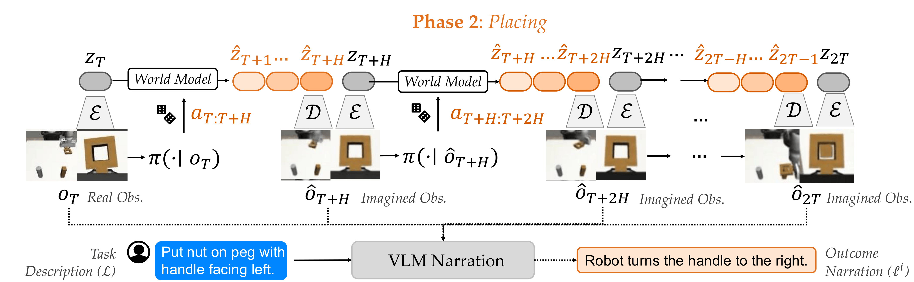

Method: Base policy alone
Scenario category: Straightforward
User instruction: "On the left side, there is a bin -- place the cup there."
Outcome: Failure
Method: UPS
Scenario category: Straightforward
User instruction: "The right side of the table has a bin -- can you put the cup there?"
Outcome: Success
Method: Base policy alone
Scenario category: Ambiguous (intention: left)
User instruction: "Put the nut on the peg so that its handle faces my dominant-hand side."
Outcome: Failure
Method: UPS
Scenario category: Ambiguous (intention: left)
User instruction: "Put the nut on the peg so that its handle faces my dominant-hand side."
Outcome: Success
Method: Base policy alone
Scenario category: Incapable
User instruction: "Could you move the cup to the bin on the right side?"
Outcome: Failure
Method: UPS
Scenario category: Incapable
User instruction: "Ensure the cup is inside the right bin."
Outcome: Success
Abstract
Policy steering is an emerging way to adapt robot behaviors at deployment-time: a learned verifier analyzes low-level action samples proposed by a pre-trained policy (e.g., diffusion policy) and selects only those aligned with the task. While Vision-Language Models (VLMs) are promising general-purpose verifiers due to their reasoning capabilities, existing frameworks often assume these models are well-calibrated. In practice, the overconfident judgment from VLM can degrade the steering performance under both high-level semantic uncertainty in task specifications and low-level action uncertainty or incapability of the pre-trained policy.
We propose uncertainty-aware policy steering (UPS), a framework that jointly reasons about semantic task uncertainty and low-level action feasibility, and selects an uncertainty resolution strategy: execute a high-confidence action, clarify task ambiguity via natural language queries, or ask for action interventions to correct the low-level policy when it is deemed incapable at the task. We leverage conformal prediction to calibrate the composition of the VLM and the pre-trained base policy, providing statistical assurances that the verifier selects the correct strategy. After collecting interventions during deployment, we employ residual learning to improve the capability of the pre-trained policy, enabling the system to learn continually but with minimal expensive human feedback. We demonstrate our framework through experiments in simulation and on hardware, showing that UPS can disentangle confident, ambiguous, and incapable scenarios and minimizes expensive user interventions compared to uncalibrated baselines and prior human- or robot-gated continual learning approaches.
UPS: Uncertainty-aware Policy Steering

Our framework calibrates the VLM verifier used for policy steering via conformal prediction. This enables the VLM to select an appropriate way to resolve uncertainty, from querying the end-user in natural language to asking to re-train the low-level control policy.
Outcome Prediction and Narration

Building on prior work, we use a world model to predict future observations of any action sample and then narrate the predictions in natural language, enabling zero-shot VLM verification. However, most low-level action policies generate short-horizon action chunks. Thus, all action samples result in similar future observations and indistinguishable narrations. Therefore, we interleave action generation and world model imaginations to create longer-horizon action sequences, and use all the decoded images for narration.
Simulation and Real World Results
Quantitative Results for Conformal Prediction
Score Functions
Bayesian Intent (Ours) : First queries the VLM to hypothesize a set of potential human intents and asks the VLM to score each of these potential intents based on the user's instruction.
Then, given a specific intent, query the VLM to estimate the likelihood of each behavior narration and marginalize over these quantities.
Chain-of-Thought Reasoning (CoT) : First asks the VLM to reason about the instruction, then generate the probabilities for each behavior narration conditioned on this reasoning.
Vanilla : Asks the VLM to directly self-generate the probabilities for each behavior narration.
Uncertainty Quantification Approaches
SimpleSet : Sorts the options from high probability to low and adds them to the prediction set until their sum exceeds the uncalibrated threshold 1 - epsilon.
Adaptive Prediction Set (APS) : Sorts the options from high probability to low and adds them to the prediction set until their sum exceeds a calibrated threshold, 1 - qhat.
Conformal Prediction (CP) : Forms a prediction set by comparing the probabilities of each individual option with a calibrated threshold, 1 - qhat.
Across both simulation and hardware, when paired with CP, our intent-aware score function achieves higher coverage than baselines in ambiguous and incapable cases. It also selectively seeks clarifications for ambiguous scenarios while avoiding unnecessary requests in straightforward or incapable cases.


Quantitative Results for Continual Learning
Baselines
Base Policy : Unaltered base diffusion policy.
Human-Gated (HG) DAgger + Residual : Base diffusion policy + residual policy trained on human-gated interventions.
EnsembleDAgger : Base diffusion policy + residual policy trained on interventions collected by querying human demonstrator whenever an ensemble of diffusion policies disagrees.
FOREWARN : UPS with base diffusion policy alone and without uncertainty quantification; queries the VLM verifier to select the best behavior narration without conformal prediction or asking clarifying questions.
UPS w/ Clarification : UPS with base diffusion policy alone.
UPS w/ Clarification + Residual (Ours) : UPS with base diffusion policy + residual policy trained from prior incapable scenarios.
By calibrating uncertainty and strategically asking for clarifications, our approach improves success rate over the base policy in ambiguous cases. Additionally, by combining our uncertainty quantification approach with three targeted resolution strategies (execute, clarify, re-train), our approach improves performance after residual training.

Qualitative Results
Scenario Category - Hardware:
Scenario Category - Simulation: